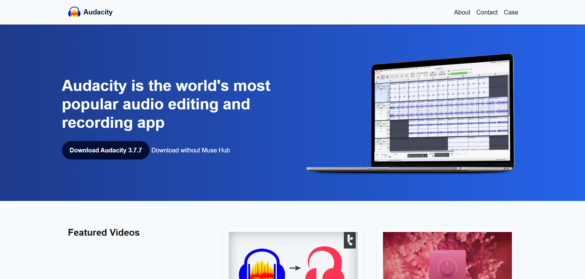
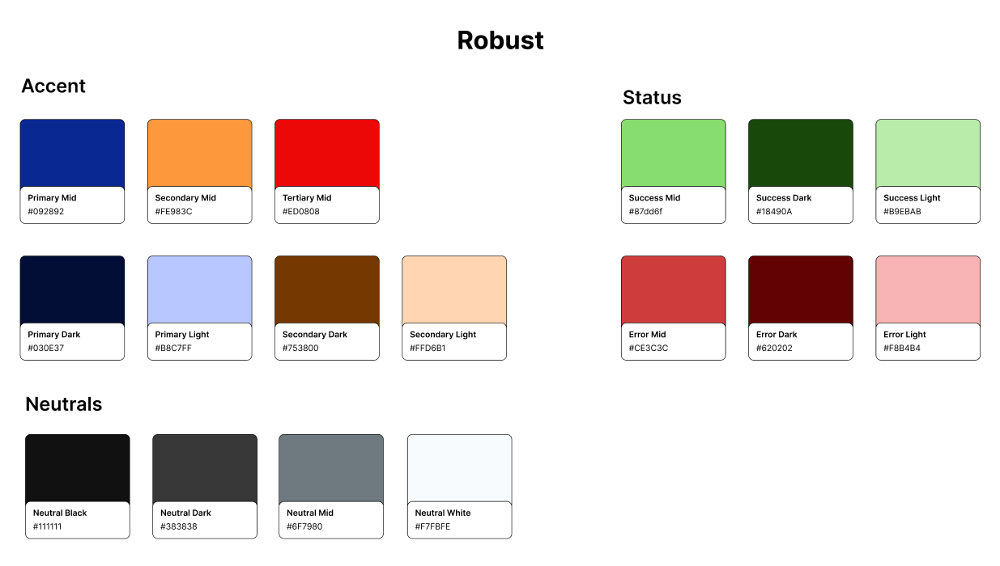
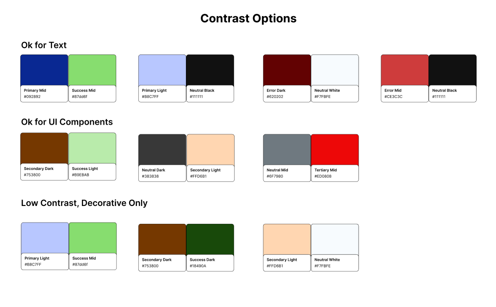
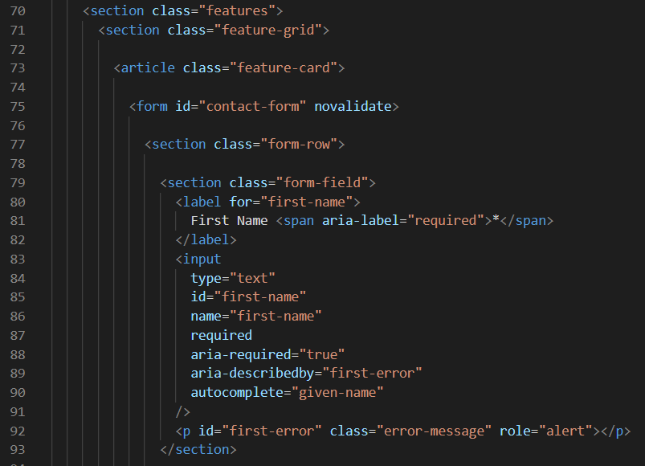

Overview
For my Web Accessibility project, I turned the website of the audio software Audacity into an accessible website using HTML, CSS, and JavaScript. The goal was to take a preexisting website and revise the code to enhance the user experience by incorporating ARIA labels, replacing div tags with meaningful semantic tags, and making text readable or readable via text-to-speech. The final product was a fully functioning accessible website developed in VSCode with HTML, CSS, and JavaScript, and managed through GitHub where it was linked to Netlify to host.
Context and Challenge
Background
My final project for this class focuses on building an accessible website using HTML, CSS, and JavaScript. The project is an individual assignment and is part of an accessibility scripting course for web development. Over the course of 10 weeks, the assignments helped in the production of my final project covering Color Palette, Web Accessible Typography, Custom Tab (tabindex) Order, Semantic HTML, and Web Accessible Forms which all leads up to the final project.
Developed on a zero-cost budget, the project aimed to give students practical experience with modern design concepts and front-end scripting. It met the course goals of creating a web accessible website. Throughout the project, I built a strong understanding of web accessibility in scripting.
Problem
The original website wasn't fully accessible and I had to work with what I could get from saving the website as an HTML in my browser. The downloaded code was not clean and was very messy. I used AI to help clean up the code to give me a good clean base to work from. After that, I was able to work on making the website accessible as I learned how to script for accessibility for the first time.
Goals & Objectives
The project required a preexisting website that could be revised to be accessible. I needed to build a user-friendly front end that improved the readability and accessibility while staying similar to the original website. I had to replace divs and spans with tags that are relevant to each element, where I also added ARIA labels allowing accessibility tools like text-to-speech to help users with disabilities. To meet the requirements of the course, took concepts of different pages in original website to create a page fitting of the course like the Contact page and About page for example. Both were originally Forum and FAQ pages respectively but were edited so I can have a Contact Form and an About page.
Process and Insight
Target Audience
This project is designed for people with disabilities. I aimed to create a simple, easy-to-use interface with straightforward functions that are accessible for all users.
Color & Contrast


One of the first assignments was to create a color palette from the original website and verify good contrast ratios. We also had to check which combination of colors is best for which occasion; whether it is suitable for text, for UI components, or if it has low contrast and is only acceptable for decorative elements.
Code / Dev

Here is an example of how I implemented semantic HTML into my code, showing the contact page. Instead of using divs and spans, I used sections and articles. This helps the screen reader identify out loud what each element is on the web page.
The Solution
Project Links
Project Demo
The website demonstrates all forms of web accessibility covered in the course in a website for the Audacity software. The video shows all the accessible features scripted in the website. The website is responsive so that it is accessible and responsive on all devices.
The Results
This 10-week project significantly expanded my understanding of web accessibility and scripting for accessibility. I learned how to design and accommodate accessible features for users with disabilities with no prior experience with scripting for accessibility.
The project also strengthened my time-management and project-planning abilities. Looking back, documenting feedback and following a more structured cycle of research, testing, and design would have made the process more efficient. Still, the experience proved how small details we don't think about could affect someone with disabilities. I hope to carry these skills into future projects as I work on more websites and benefit my websites and my future clients' websites. I hope to see what I could bring to my last co-op since their target audience is older adults who most have poorer eyesight and other disabilities.